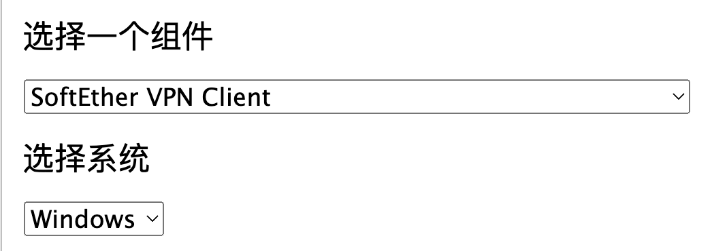

# 前言
在进行大型项目外包或协作时，经常需要通过 VPN 访问私有代码仓库或内网资源。本文演示如何使用 SoftEther 快速搭建一个稳定、易用的开发访问环境。
SoftEther 由日本筑波大学开发，是一款开源的多协议 VPN 平台，支持多种连接方式。想进一步了解其功能与特性，可前往官网查看。
# 服务端
准备一台拥有公网 IP 的服务器用于运行 VPN 服务，对硬件要求不高。本文使用 Docker 部署。
创建 docker-compose.yml：
1 | services: |
启动容器：
1 | docker-compose up -d |
请在云服务控制台或防火墙中放通上述端口。
接着下载服务端管理工具：

以下以 Windows 版为例进行说明。打开管理工具，使用 <服务器 IP>:10443 连接至服务端，密码为 docker-compose.yml 中的 SPW。
进入后选择「管理虚拟 Hub」，用于管理用户与访问策略。先点击「虚拟 NAT 和虚拟 DHCP 服务器」，确保 SecureNAT 已启用，然后进入「SecureNAT 配置」。在此可设置 VPN 的虚拟网段，建议避开与本地网络重复的网段。
- 建议：将「应用到客户端的选项」留空，可避免 “全流量走 VPN”，仅让虚拟网卡网段内的流量走 VPN。
- 如需全量流量经服务端转发，可将默认网关设置为虚拟网卡地址。

至此，服务端配置完成。
# 客户端
# Linux
Linux 客户端配置相对繁琐，可使用笔者整理好的脚本：
1 | git pull |
然后从官网下载对应版本的 Linux 客户端：

将压缩包放到项目目录后执行安装脚本：
1 | sh client_ |
创建账户（username 和 password 为服务端「用户管理」中创建的账号密码）：
1 | sh |
启动连接并为客户端虚拟网卡设置静态 IP。该 IP 需位于服务端 DHCP 配置的网段内；若子网掩码为 255.255.255.0，请在 IP 后加 /24：
1 | sh |
可将启动脚本加入 crontab 或配置为 systemd service 实现开机自启。其他用法参考文档。
# Windows
从官网下载对应版本的客户端。

安装完成后，打开客户端，依次点击「连接」>「新 VPN 连接设置」。首次新建会自动创建虚拟网卡。
按服务端配置填写红框内信息，选择虚拟网卡后点击「确定」。

右键刚创建的连接，点击「连接」即可。右键选择「启动连接设置」可实现开机自启动。若需要静态 IP，可在系统网络设置中找到该虚拟网卡并配置。
# macOS 与 iOS
macOS 与 iOS 可使用系统内置 L2TP：
设置 > VPN > 添加 VPN 设置，选择 L2TP。

配置与 Windows 基本一致，服务器地址无需填写端口。共享密钥填写 docker-compose.yml 中的 PSK（默认 notasecret）。如需静态 IP，可在「TCP/IP」中配置。
- iOS 提示：若服务端未配置默认网关，请关闭「发送所有流量」，否则可能无法上网。
完成以上配置后，便可通过 VPN 随时随地访问本地资源。